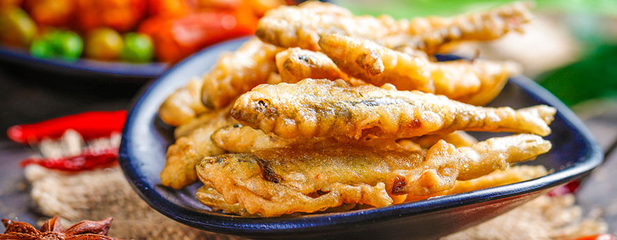

首页 >旅游问答
十渡有什么美食推荐？
时间：2019-03-12 来源：十渡农家院
十渡风景区不仅青山绿水风景宜人，还有不少的美食供您品尝，我们为您推荐几种十渡的特色菜，欢迎您前来品尝！
一、情人菜
原名“荏青菜”，因其当地有青色和红色两个品种；"荏青”倒置后为“青荏”经“创意”修改得名，此菜颇受游客欢迎，据说成十渡必点菜之一。
二、河菜
拒马河产量的植物之一，可做成凉菜，也可做成包子。
三、水芹菜
水芹菜是三坡野菜系列中的精品，同样是粗纤维植物，口感比家芹菜好多了，做法是泡酸菜。
四、烤全羊
十渡和野三坡的羊一般是生长在5-8个月左右的小羊，肉嫩喷香。
五、虹鳟鱼
虹鳟鱼因其多肉少刺，也是深受游客欢迎的。
六、炸小鱼
拒马河土鱼，肉质鲜嫩。干炸后味道更棒。自己烧烤味道更佳。
